18 Exploratory data analysis
This chapter was written with Monica Alexander.
Required reading
- Wickham, Hadley, and Garrett Grolemund, 2017, ‘R for Data Science’, Chapters 3 and 7, freely available here: https://r4ds.had.co.nz/.
Recommended reading
- Hall, Megan, 2019, ‘Exploratory Data Analysis Using Tidyverse’, freely available at: https://hockey-graphs.com/2019/10/08/exploratory-data-analysis-using-tidyverse/.
- Jordan, Michael I, 2019, ‘AI - The revolution hasn’t started yet’, freely available at: https://hdsr.mitpress.mit.edu/pub/wot7mkc1.
- Silge, Julia, 2018, ‘Understanding PCA using Stack Overflow data’, freely available at: https://juliasilge.com/blog/stack-overflow-pca/.
- Soetewey, Antoine, 2020, ‘Descriptive statistics in R’, freely available at: https://www.statsandr.com/blog/descriptive-statistics-in-r/.
- Stodulka, Jiri, 2019, ‘Toronto Crime and Folium’, freely available at: https://www.jiristodulka.com/post/toronto-crime/.
- Wong, Julia Carrie, 2020, ‘One year inside Trump’s monumental Facebook campaign’, The Guardian, 29 January, freely available at: https://www.theguardian.com/us-news/2020/jan/28/donald-trump-facebook-ad-campaign-2020-election.
Key concepts/skills/etc
- Quickly coming to terms with a new dataset
Key libraries/functions/etc
tidyverseggplot2
Pre-quiz
- In your own words what is exploratory data analysis?
- If you have a dataset called ‘my_data’, which has two columns: ‘first_col’ and ‘second_col’, then could you please write some rough R code that would generate a graph (the type of graph doesn’t matter).
- Consider a dataset that has 500 rows and 3 columns, so there are 1,500 cells. If 100 of the cells are missing data for at least one of the columns, then would you remove the whole row your dataset or try to run your analysis on the data as is, or some other procedure? What if your dataset had 10,000 rows instead, but the same number of missing cells?
- Please note three ways of identifying unusual values.
- What is the difference between a categorical and continuous variable?
18.1 Introduction
Exploratory data analysis is never finished, you just die.
This chapter is about exploratory data analysis (EDA) and data visualization steps in R. The aim is to get you used to working with real data (that has issues) to understand the main characteristics and potential issues.
We will be using the opendatatoronto R package, which interfaces with the City of Toronto Open Data Portal.
18.2 A note on packages
If you are running this Rmd on your local machine, you may need to install various packages used (using the install.packages function).
Load in all the packages we need:
library(opendatatoronto)
library(tidyverse)
library(stringr)
library(skimr)
library(visdat)
library(janitor)##
## Attaching package: 'janitor'## The following objects are masked from 'package:stats':
##
## chisq.test, fisher.test##
## Attaching package: 'lubridate'## The following object is masked from 'package:here':
##
## here## The following object is masked from 'package:base':
##
## date18.3 TTC subway delays
This package provides an interface to all data available on the Open Data Portal provided by the City of Toronto.
Use the list_packages function to look at what’s available
## # A tibble: 336 x 10
## title id topics civic_issues excerpt dataset_category num_resources
## <chr> <chr> <chr> <chr> <chr> <chr> <int>
## 1 Dail… 8a6e… City … Affordable … "Daily… Table 8
## 2 Civi… 7d0d… City … Affordable … "The O… Document 2
## 3 Body… c405… City … <NA> "This … Table 2
## 4 Stre… 1db3… City … Mobility "Trans… Map 1
## 5 Stre… 74f6… City … <NA> "Publi… Map 1
## 6 Stre… 821f… City … <NA> "Publi… Map 1
## 7 Stre… ccfd… City … <NA> "Poste… Map 1
## 8 Stre… cf70… City … <NA> "Poste… Map 1
## 9 Stre… 99b1… City … <NA> "Infor… Map 1
## 10 Stre… 71e6… Trans… <NA> "Bike … Map 1
## # … with 326 more rows, and 3 more variables: formats <chr>,
## # refresh_rate <chr>, last_refreshed <date>Let’s download the data on TTC subway delays in 2019. There are multiple files for 2019 so we need to get them all and make them into one big dataframe.
res <- list_package_resources("996cfe8d-fb35-40ce-b569-698d51fc683b")
res <- res %>% mutate(year = str_extract(name, "201.?"))
delay_2019_ids <- res %>% filter(year==2019) %>% select(id) %>% pull()
delay_2019 <- c()
for(i in 1:length(delay_2019_ids)) {
delay_2019 <- bind_rows(delay_2019, get_resource(delay_2019_ids[i]))
}
# make the column names nicer to work with
delay_2019 <- clean_names(delay_2019)Let’s also download the delay code and readme, as reference.
## New names:
## * `` -> ...1
## * `CODE DESCRIPTION` -> `CODE DESCRIPTION...3`
## * `` -> ...4
## * `` -> ...5
## * `CODE DESCRIPTION` -> `CODE DESCRIPTION...7`This dataset has a bunch of interesting variables. You can refer to the readme for descriptions. Our outcome of interest is min_delay, which give the delay in mins.
## # A tibble: 6 x 10
## date time day station code min_delay min_gap bound line
## <dttm> <chr> <chr> <chr> <chr> <dbl> <dbl> <chr> <chr>
## 1 2019-01-01 00:00:00 01:08 Tues… YORK M… PUSI 0 0 S YU
## 2 2019-01-01 00:00:00 02:14 Tues… ST AND… PUMST 0 0 <NA> YU
## 3 2019-01-01 00:00:00 02:16 Tues… JANE S… TUSC 0 0 W BD
## 4 2019-01-01 00:00:00 02:27 Tues… BLOOR … SUO 0 0 N YU
## 5 2019-01-01 00:00:00 03:03 Tues… DUPONT… MUATC 11 16 N YU
## 6 2019-01-01 00:00:00 03:08 Tues… EGLINT… EUATC 11 16 S YU
## # … with 1 more variable: vehicle <dbl>18.4 EDA and data viz
The following section highlights some tools that might be useful for you when you are getting used to a new dataset. There’s no one way of exploration, but it’s important to always keep in mind:
- what should your variables look like (type, values, distribution, etc)
- what would be surprising (outliers etc)
- what is your end goal (here, it might be understanding factors associated with delays, e.g. stations, time of year, time of day, etc)
In any data analysis project, if it turns out you have data issues, surprising values, missing data etc, it’s important you document anything you found and the subsequent steps or assumptions you made before moving onto your data analysis / modeling.
As always:
- Start with an end in mind.
- Be as lazy as possible.
18.5 Data checks
18.5.1 Sanity Checks
We need to check variables should be what they say they are. If they aren’t, the natural next question is to what to do with issues (recode? remove?)
E.g. check days of week
## [1] "Tuesday" "Wednesday" "Thursday" "Friday" "Saturday" "Sunday"
## [7] "Monday"Check lines: oh no. some issues here. Some have obvious recodes, others, not so much.
## [1] "YU" "BD" "YU/BD"
## [4] "SHP" "SRT" NA
## [7] "YUS" "B/D" "BD LINE"
## [10] "999" "YU/ BD" "YU & BD"
## [13] "BD/YU" "YU\\BD" "46 MARTIN GROVE"
## [16] "RT" "BLOOR-DANFORTH" "YU / BD"
## [19] "134 PROGRESS" "YU - BD" "985 SHEPPARD EAST EXPR"
## [22] "22 COXWELL" "100 FLEMINGDON PARK" "YU LINE"The skimr package might also be useful here
| Name | delay_2019 |
| Number of rows | 19222 |
| Number of columns | 10 |
| _______________________ | |
| Column type frequency: | |
| character | 6 |
| numeric | 3 |
| POSIXct | 1 |
| ________________________ | |
| Group variables | None |
Variable type: character
| skim_variable | n_missing | complete_rate | min | max | empty | n_unique | whitespace |
|---|---|---|---|---|---|---|---|
| time | 0 | 1.00 | 5 | 5 | 0 | 1380 | 0 |
| day | 0 | 1.00 | 6 | 9 | 0 | 7 | 0 |
| station | 0 | 1.00 | 3 | 22 | 0 | 264 | 0 |
| code | 0 | 1.00 | 3 | 5 | 0 | 185 | 0 |
| bound | 4380 | 0.77 | 1 | 1 | 0 | 5 | 0 |
| line | 50 | 1.00 | 2 | 22 | 0 | 23 | 0 |
Variable type: numeric
| skim_variable | n_missing | complete_rate | mean | sd | p0 | p25 | p50 | p75 | p100 | hist |
|---|---|---|---|---|---|---|---|---|---|---|
| min_delay | 0 | 1 | 2.41 | 8.49 | 0 | 0 | 0 | 3 | 455 | ▇▁▁▁▁ |
| min_gap | 0 | 1 | 3.54 | 9.22 | 0 | 0 | 0 | 6 | 460 | ▇▁▁▁▁ |
| vehicle | 0 | 1 | 3974.44 | 2455.91 | 0 | 0 | 5239 | 5671 | 9206 | ▆▁▇▆▁ |
Variable type: POSIXct
| skim_variable | n_missing | complete_rate | min | max | median | n_unique |
|---|---|---|---|---|---|---|
| date | 0 | 1 | 2019-01-01 | 2019-12-31 | 2019-06-27 | 365 |
What are the different values of bound for each line?
For simplicity, just keep the correct line labels.
delay_2019 %>%
filter(line %in% c("BD", "YU", "SHP", "SRT")) %>%
mutate(bound = as.factor(bound)) %>%
group_by(line) %>%
skim(bound)| Name | Piped data |
| Number of rows | 18774 |
| Number of columns | 10 |
| _______________________ | |
| Column type frequency: | |
| factor | 1 |
| ________________________ | |
| Group variables | line |
Variable type: factor
| skim_variable | line | n_missing | complete_rate | ordered | n_unique | top_counts |
|---|---|---|---|---|---|---|
| bound | BD | 1721 | 0.79 | FALSE | 4 | W: 3285, E: 3187, S: 4, N: 3 |
| bound | SHP | 156 | 0.74 | FALSE | 3 | E: 242, W: 201, B: 1, N: 0 |
| bound | SRT | 210 | 0.70 | FALSE | 5 | N: 235, S: 232, E: 10, W: 7 |
| bound | YU | 1860 | 0.80 | FALSE | 5 | S: 3993, N: 3407, E: 10, W: 4 |
18.5.2 Missing values
Look to see how many NAs by variable
## Warning: funs() is soft deprecated as of dplyr 0.8.0
## Please use a list of either functions or lambdas:
##
## # Simple named list:
## list(mean = mean, median = median)
##
## # Auto named with `tibble::lst()`:
## tibble::lst(mean, median)
##
## # Using lambdas
## list(~ mean(., trim = .2), ~ median(., na.rm = TRUE))
## This warning is displayed once per session.## # A tibble: 1 x 10
## date time day station code min_delay min_gap bound line vehicle
## <dbl> <dbl> <dbl> <dbl> <dbl> <dbl> <dbl> <dbl> <dbl> <dbl>
## 1 0 0 0 0 0 0 0 22.8 0.260 0The visdat package is also useful here, particularly to see how missing values are distributed.
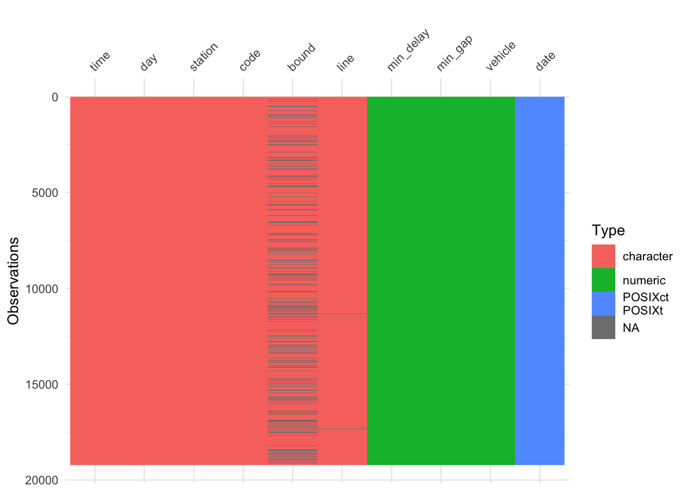
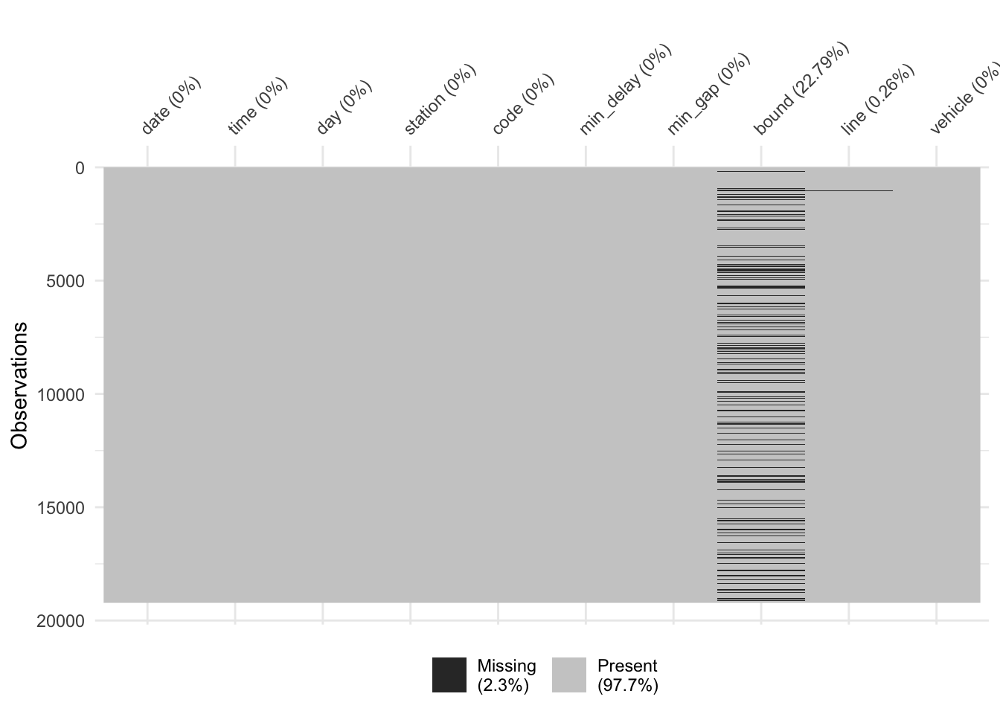
18.5.3 Duplicates?
The get_dupes function from the janitor package is useful for this.
## No variable names specified - using all columns.## # A tibble: 158 x 11
## date time day station code min_delay min_gap bound line
## <dttm> <chr> <chr> <chr> <chr> <dbl> <dbl> <chr> <chr>
## 1 2019-01-01 00:00:00 08:18 Tues… DONLAN… MUESA 5 10 W BD
## 2 2019-01-01 00:00:00 08:18 Tues… DONLAN… MUESA 5 10 W BD
## 3 2019-02-01 00:00:00 05:51 Frid… SCARB … MRTO 10 15 S SRT
## 4 2019-02-01 00:00:00 05:51 Frid… SCARB … MRTO 10 15 S SRT
## 5 2019-02-01 00:00:00 06:45 Frid… MIDLAN… MRWEA 3 8 S SRT
## 6 2019-02-01 00:00:00 06:45 Frid… MIDLAN… MRWEA 3 8 S SRT
## 7 2019-02-01 00:00:00 06:55 Frid… LAWREN… ERDO 0 0 S SRT
## 8 2019-02-01 00:00:00 06:55 Frid… LAWREN… ERDO 0 0 S SRT
## 9 2019-02-01 00:00:00 07:16 Frid… MCCOWA… MRWEA 5 10 N SRT
## 10 2019-02-01 00:00:00 07:16 Frid… MCCOWA… MRWEA 5 10 N SRT
## # … with 148 more rows, and 2 more variables: vehicle <dbl>, dupe_count <int>There are quite a few duplicates. Remove for now:
18.5.4 Visualizing distributions
Histograms, barplots, and density plots are your friends here.
Let’s look at the outcome of interest: min_delay. First of all just a histogram of all the data:
## Removing the observations that have non-standardized lines
delay_2019 <- delay_2019 %>% filter(line %in% c("BD", "YU", "SHP", "SRT"))
ggplot(data = delay_2019) +
geom_histogram(aes(x = min_delay))## `stat_bin()` using `bins = 30`. Pick better value with `binwidth`.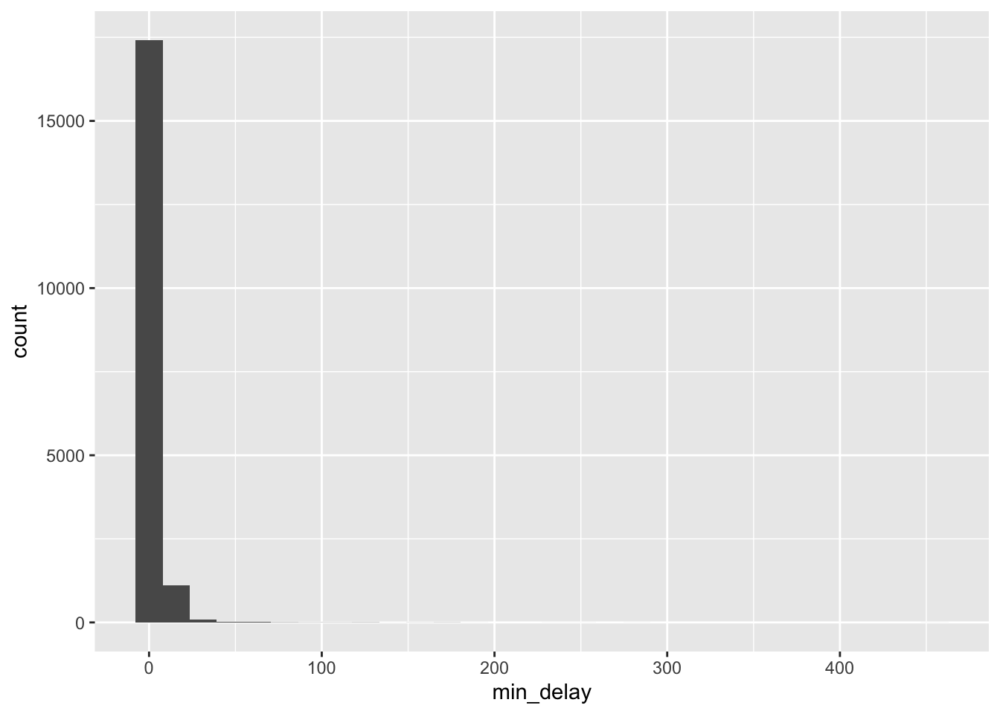
To improve readability, could plot on logged scale:
## Warning: Transformation introduced infinite values in continuous x-axis## `stat_bin()` using `bins = 30`. Pick better value with `binwidth`.## Warning: Removed 11944 rows containing non-finite values (stat_bin).
Our initial EDA hinted at an outlying delay time, let’s take a look at the largest delays below. Join the delay_codes dataset to see what the delay is. (Have to do some mangling as SRT has different codes).
delay_2019 <- delay_2019 %>%
left_join(delay_codes %>% rename(code = `SUB RMENU CODE`, code_desc = `CODE DESCRIPTION...3`) %>% select(code, code_desc)) ## Joining, by = "code"delay_2019 <- delay_2019 %>%
mutate(code_srt = ifelse(line=="SRT", code, "NA")) %>%
left_join(delay_codes %>% rename(code_srt = `SRT RMENU CODE`, code_desc_srt = `CODE DESCRIPTION...7`) %>% select(code_srt, code_desc_srt)) %>%
mutate(code = ifelse(code_srt=="NA", code, code_srt),
code_desc = ifelse(is.na(code_desc_srt), code_desc, code_desc_srt)) %>%
select(-code_srt, -code_desc_srt)## Joining, by = "code_srt"The 455 min delay due to ‘Rail Related Problem’ is an outlier.
delay_2019 %>%
left_join(delay_codes %>% rename(code = `SUB RMENU CODE`, code_desc = `CODE DESCRIPTION...3`) %>% select(code, code_desc)) %>%
arrange(-min_delay) %>%
select(date, time, station, line, min_delay, code, code_desc)## Joining, by = c("code", "code_desc")## # A tibble: 18,697 x 7
## date time station line min_delay code code_desc
## <dttm> <chr> <chr> <chr> <dbl> <chr> <chr>
## 1 2019-06-25 00:00:00 18:48 WILSON TO … YU 455 PUTR Rail Related Pro…
## 2 2019-02-12 00:00:00 20:28 LAWRENCE E… SRT 284 MRWEA Weather Reports …
## 3 2019-06-05 00:00:00 12:42 UNION TO S… YU 250 MUPLA Fire/Smoke Plan A
## 4 2019-10-22 00:00:00 14:22 LAWRENCE S… YU 228 PUTS Structure Relate…
## 5 2019-09-26 00:00:00 11:38 YORK MILLS… YU 193 MUPR1 Priority One - T…
## 6 2019-06-08 00:00:00 08:51 SPADINA BD… BD 180 MUPLB Fire/Smoke Plan …
## 7 2019-12-02 00:00:00 06:59 DUNDAS WES… BD 176 MUPLB Fire/Smoke Plan …
## 8 2019-01-29 00:00:00 05:46 VICTORIA P… BD 174 MUWEA Weather Reports …
## 9 2019-02-22 00:00:00 17:32 ELLESMERE … SRT 168 PRW Rail Defect/Fast…
## 10 2019-02-10 00:00:00 07:53 BAYVIEW ST… SHP 165 PUSI Signals or Relat…
## # … with 18,687 more rows18.5.4.1 Grouping and small multiples
A quick and powerful visualization technique is to group the data by a variable of interest, e.g. line
ggplot(data = delay_2019) +
geom_histogram(aes(x = min_delay, y = ..density.., fill = line), position = 'dodge', bins = 10) + scale_x_log10()## Warning: Transformation introduced infinite values in continuous x-axis## Warning: Removed 11944 rows containing non-finite values (stat_bin).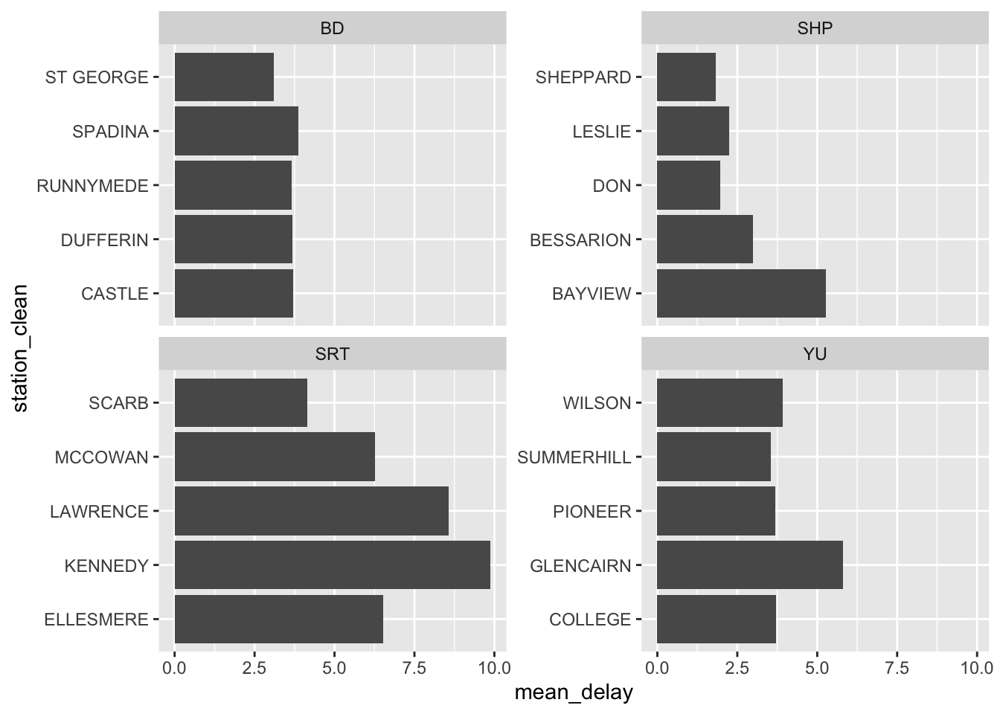
I switched to density above to look at the the distributions more comparably, but we should also be aware of differences in frequency, in particular, SHP and SRT have much smaller counts:
ggplot(data = delay_2019) +
geom_histogram(aes(x = min_delay, fill = line), position = 'dodge', bins = 10) + scale_x_log10()## Warning: Transformation introduced infinite values in continuous x-axis## Warning: Removed 11944 rows containing non-finite values (stat_bin).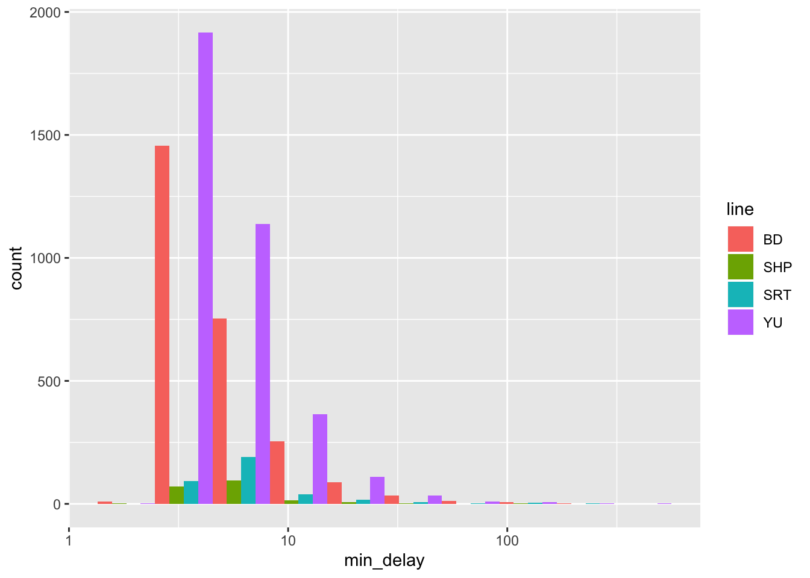
If you want to group by more than one variable, facets are good:
ggplot(data = delay_2019) +
geom_density(aes(x = min_delay, color = day), bw = .08) +
scale_x_log10() + facet_grid(~line)## Warning: Transformation introduced infinite values in continuous x-axis## Warning: Removed 11944 rows containing non-finite values (stat_density).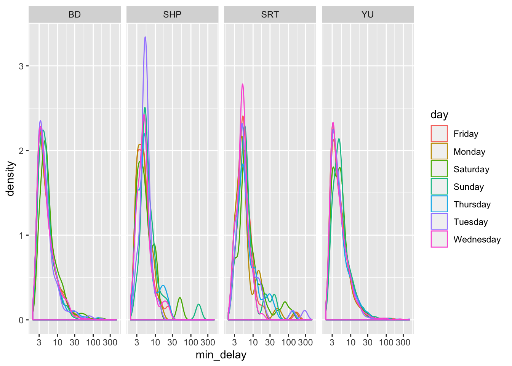
Side note: the station names are a mess. Try and clean up the station names a bit by taking just the first word (or, the first two if it starts with “ST”):
delay_2019 <- delay_2019 %>%
mutate(station_clean = ifelse(str_starts(station, "ST"), word(station, 1,2), word(station, 1)))Plot top five stations by mean delay:
delay_2019 %>%
group_by(line, station_clean) %>%
summarise(mean_delay = mean(min_delay), n_obs = n()) %>%
filter(n_obs>1) %>%
arrange(line, -mean_delay) %>%
slice(1:5) %>%
ggplot(aes(station_clean, mean_delay)) + geom_col() + coord_flip() + facet_wrap(~line, scales = "free_y")
18.5.5 Visualizing time series
Daily plot is messy (you can check for yourself). Let’s look by week to see if there’s any seasonality. The lubridate package has lots of helpful functions that deal with date variables. First, mean delay (of those that were delayed more than 0 mins):
delay_2019 %>%
filter(min_delay>0) %>%
mutate(week = week(date)) %>%
group_by(week, line) %>%
summarise(mean_delay = mean(min_delay)) %>%
ggplot(aes(week, mean_delay, color = line)) + geom_point() + geom_smooth() + facet_grid(~line)## `geom_smooth()` using method = 'loess' and formula 'y ~ x'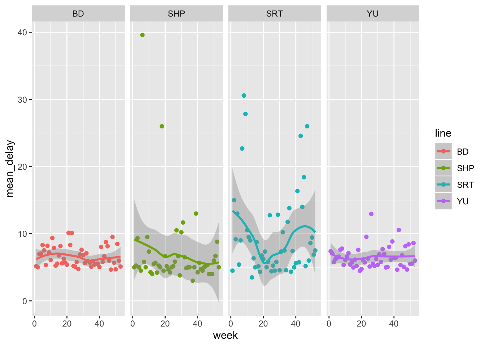
What about proportion of delays that were greater than 10 mins?
delay_2019 %>%
mutate(week = week(date)) %>%
group_by(week, line) %>%
summarise(prop_delay = sum(min_delay>10)/n()) %>%
ggplot(aes(week, prop_delay, color = line)) + geom_point() + geom_smooth() + facet_grid(~line)## `geom_smooth()` using method = 'loess' and formula 'y ~ x'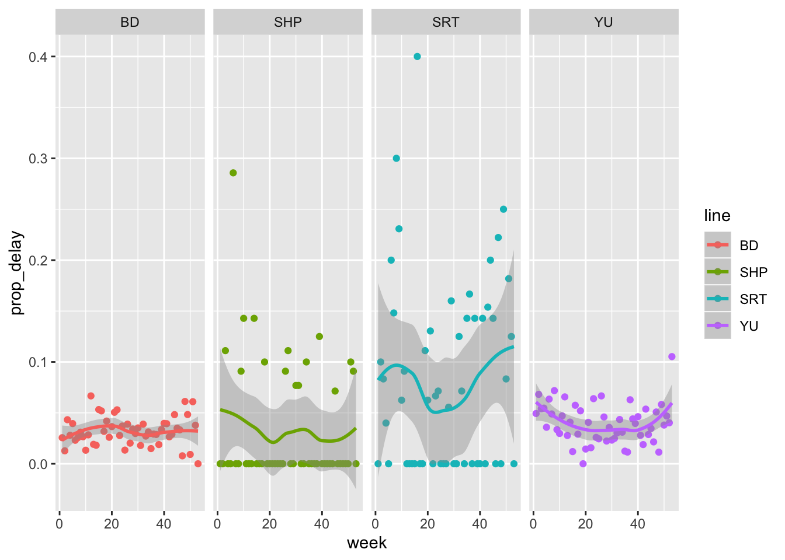
18.5.6 Visualizing relationships
Note that scatter plots are a good precursor to modeling, to visualize relationships between continuous variables. Nothing obvious to plot here, but easy to do with geom_point.
Look at top five reasons for delay by station. Do they differ? Think about how this could be modeled.
delay_2019 %>%
group_by(line, code_desc) %>%
summarise(mean_delay = mean(min_delay)) %>%
arrange(-mean_delay) %>%
slice(1:5) %>%
ggplot(aes(x = code_desc,
y = mean_delay)) +
geom_col() +
facet_wrap(vars(line),
scales = "free_y",
nrow = 4) +
coord_flip()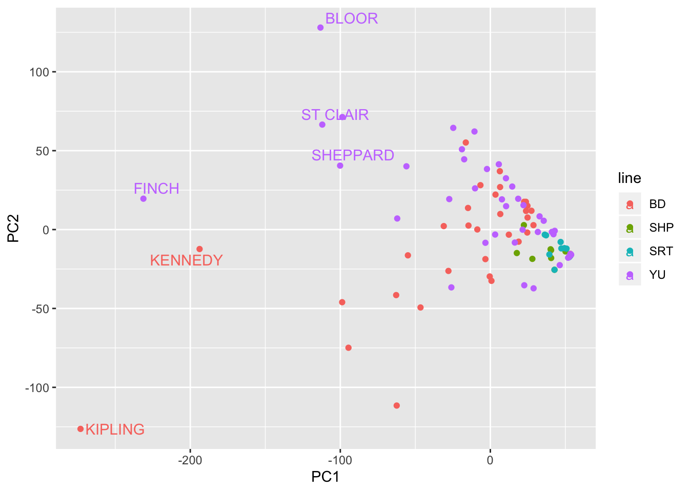
18.5.7 PCA
Principal components analysis is a really powerful exploratory tool. It allows you to pick up potential clusters and/or outliers that can help to inform model building.
Let’s do a quick (and imperfect) example looking at types of delays by station.
The delay categories are a bit of a mess, and there’s hundreds of them. As a simple start, let’s just take the first word:
delay_2019 <- delay_2019 %>%
mutate(code_red = case_when(
str_starts(code_desc, "No") ~ word(code_desc, 1, 2),
str_starts(code_desc, "Operator") ~ word(code_desc, 1,2),
TRUE ~ word(code_desc,1))
)Let’s also just restrict the analysis to causes that happen at least 50 times over 2019. To do the PCA, the dataframe also needs to be switched to wide format:
dwide <- delay_2019 %>%
group_by(line, station_clean) %>%
mutate(n_obs = n()) %>%
filter(n_obs>1) %>%
group_by(code_red) %>%
mutate(tot_delay = n()) %>%
arrange(tot_delay) %>%
filter(tot_delay>50) %>%
group_by(line, station_clean, code_red) %>%
summarise(n_delay = n()) %>%
pivot_wider(names_from = code_red, values_from = n_delay) %>%
mutate_all(.funs = funs(ifelse(is.na(.), 0, .)))## `mutate_all()` ignored the following grouping variables:
## Columns `line`, `station_clean`
## Use `mutate_at(df, vars(-group_cols()), myoperation)` to silence the message.Do the PCA:
delay_pca <- prcomp(dwide[,3:ncol(dwide)])
df_out <- as_tibble(delay_pca$x)
df_out <- bind_cols(dwide %>% select(line, station_clean), df_out)
head(df_out)## # A tibble: 6 x 40
## # Groups: line, station_clean [6]
## line station_clean PC1 PC2 PC3 PC4 PC5 PC6 PC7 PC8
## <chr> <chr> <dbl> <dbl> <dbl> <dbl> <dbl> <dbl> <dbl> <dbl>
## 1 BD BATHURST 6.50 26.9 -2.71 -10.8 -8.40 -11.7 -3.33 -4.11
## 2 BD BAY 24.8 7.63 -2.19 -7.05 0.714 3.90 -2.29 -4.14
## 3 BD BLOOR -62.4 -112. 57.3 -23.4 -5.09 -14.1 13.7 5.06
## 4 BD BROADVIEW -6.60 28.1 -1.06 -14.0 -6.49 -8.29 -6.29 -1.40
## 5 BD CASTLE 23.8 11.8 -1.31 -7.93 -3.62 -3.37 -2.08 -3.48
## 6 BD CHESTER 24.6 -1.87 -18.6 2.75 1.85 0.0736 3.79 -1.27
## # … with 30 more variables: PC9 <dbl>, PC10 <dbl>, PC11 <dbl>, PC12 <dbl>,
## # PC13 <dbl>, PC14 <dbl>, PC15 <dbl>, PC16 <dbl>, PC17 <dbl>, PC18 <dbl>,
## # PC19 <dbl>, PC20 <dbl>, PC21 <dbl>, PC22 <dbl>, PC23 <dbl>, PC24 <dbl>,
## # PC25 <dbl>, PC26 <dbl>, PC27 <dbl>, PC28 <dbl>, PC29 <dbl>, PC30 <dbl>,
## # PC31 <dbl>, PC32 <dbl>, PC33 <dbl>, PC34 <dbl>, PC35 <dbl>, PC36 <dbl>,
## # PC37 <dbl>, PC38 <dbl>Plot the first two PCs, and label some outlying stations:
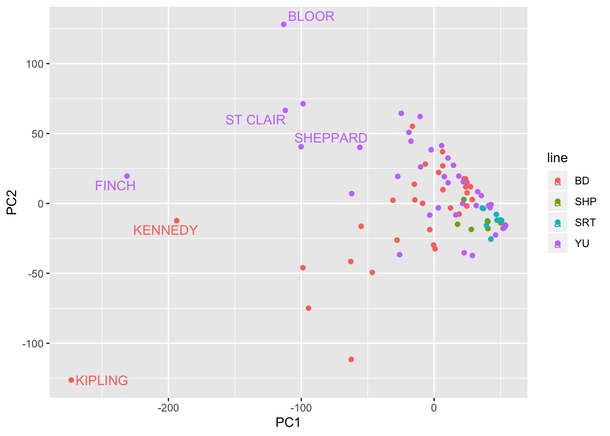
Plot the factor loadings. Some evidence of public v operator?
df_out_r <- as_tibble(delay_pca$rotation)
df_out_r$feature <- colnames(dwide[,3:ncol(dwide)])
df_out_r## # A tibble: 38 x 39
## PC1 PC2 PC3 PC4 PC5 PC6 PC7 PC8
## <dbl> <dbl> <dbl> <dbl> <dbl> <dbl> <dbl> <dbl>
## 1 -0.0412 0.0638 1.33e-2 -4.67e-2 0.0246 0.0184 -0.00363 0.0198
## 2 -0.0332 -0.00469 -4.14e-2 -7.51e-3 0.0201 -0.0122 -0.0914 -0.0903
## 3 -0.135 0.207 2.37e-2 -1.44e-1 0.135 -0.0381 -0.00931 -0.320
## 4 -0.0652 0.0475 -4.43e-2 -2.51e-2 -0.00139 -0.0748 -0.144 -0.428
## 5 -0.00443 0.00878 -4.99e-5 -8.30e-4 0.00967 0.00954 -0.0160 -0.0144
## 6 -0.0268 -0.00722 -4.39e-3 5.34e-4 -0.0151 -0.0125 -0.00381 -0.0423
## 7 -0.0813 0.0960 -4.62e-2 4.79e-2 -0.0978 -0.0365 -0.0766 0.278
## 8 -0.0117 0.0135 5.48e-3 -2.94e-2 0.0125 0.0377 -0.0790 -0.0321
## 9 -0.516 0.655 -1.77e-2 -1.62e-1 -0.221 -0.287 -0.184 0.0465
## 10 -0.151 0.0826 5.48e-2 3.52e-1 -0.397 0.281 0.110 0.477
## # … with 28 more rows, and 31 more variables: PC9 <dbl>, PC10 <dbl>,
## # PC11 <dbl>, PC12 <dbl>, PC13 <dbl>, PC14 <dbl>, PC15 <dbl>, PC16 <dbl>,
## # PC17 <dbl>, PC18 <dbl>, PC19 <dbl>, PC20 <dbl>, PC21 <dbl>, PC22 <dbl>,
## # PC23 <dbl>, PC24 <dbl>, PC25 <dbl>, PC26 <dbl>, PC27 <dbl>, PC28 <dbl>,
## # PC29 <dbl>, PC30 <dbl>, PC31 <dbl>, PC32 <dbl>, PC33 <dbl>, PC34 <dbl>,
## # PC35 <dbl>, PC36 <dbl>, PC37 <dbl>, PC38 <dbl>, feature <chr>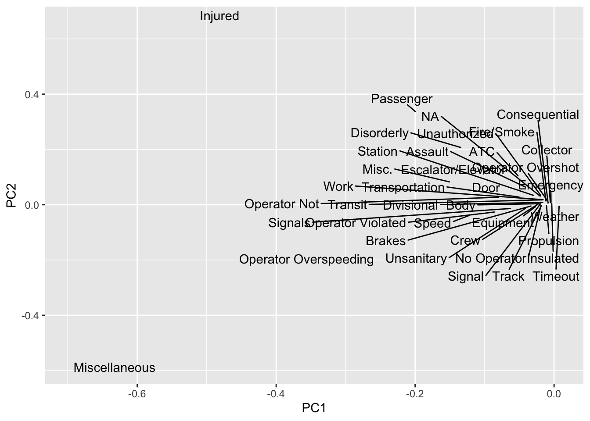
18.6 Exercises
- Using the
opendatatorontopackage, download the data on mayoral campaign contributions for 2014. (note: the 2014 file you will get fromget_resource, so just keep the sheet that relates to the Mayor election). - Clean up the data format (fixing the parsing issue and standardizing the column names using
janitor) - Summarize the variables in the dataset. Are there missing values, and if so, should we be worried about them? Is every variable in the format it should be? If not, create new variable(s) that are in the right format.
- Visually explore the distribution of values of the contributions. What contributions are notable outliers? Do they share a similar characteristic(s)? It may be useful to plot the distribution of contributions without these outliers to get a better sense of the majority of the data.
- List the top five candidates in each of these categories:
- total contributions
- mean contribution
- number of contributions
- Repeat 5 but without contributions from the candidates themselves.
- How many contributors gave money to more than one candidate?